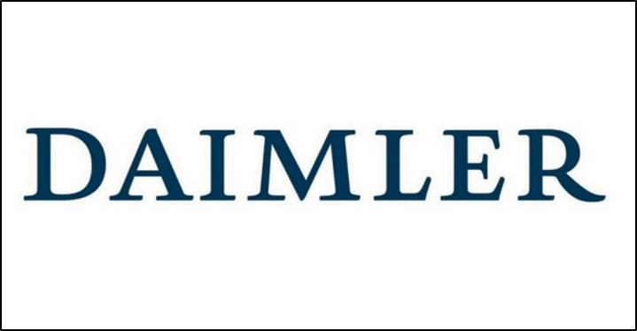
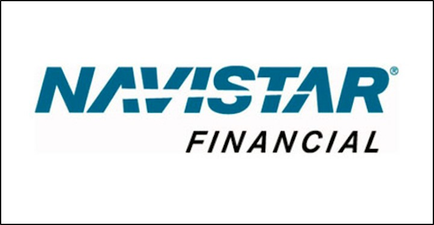
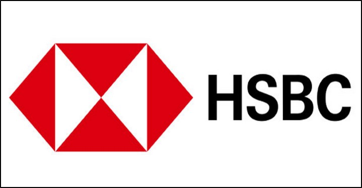
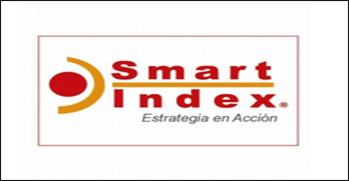

Programador Web.Net, Administrador de Base de Datos y Líder de Proyectos
Soy licenciado en Informática Administrativa, egresado de la Universidad ICEL en 2005, titulado en 2008, y tengo perfil de líder de proyectos en PMP Cascade y Agile Scrumm, desarrollador Web y Desktop, en .Net, con ASP Net y MVC, con lenguaje en Visual Basic y C#, HTML5 javascript y CSS, y administrador de base de datos con excelente manejo de SQL Server, Oracle 10 (querys, reporting, stored procedures, triggers) y MySQL.

Desarrollador WEB
Enero 2010 - Enero 2012

Project Manager Software
Enero 2012 - Mayo 2013

Project Manager Infraestructura
Junio 2013 - Julio 2015

Desarrollador ERP - Scrum Master
Junio 2016 - Abril 2020
Soy una persona proactiva, notable desempeño en equipo de trabajo, buen comunicador, negociador, y excelente seguimiento a peticiones del cliente, Inglès al 70%, análisis de sistemas y diseño de los mismos, amplia experiencia en el área de Finanzas, Tesorería y Bancas Electrónicas, en los sectores bancarios y automotrices. Tuve a cargo, dos equipos de trabajo para el logro de módulos de Finanzas dentro del ERP en Smart Index, asì como seguimiento en proyectos SCRUM para la administración de recursos y visualización de su productividad, en base al trabajo que realizaban como encuestador de calidad en Campo.